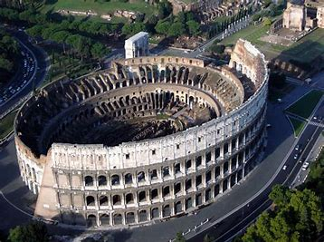
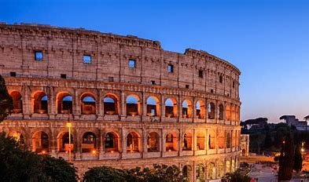
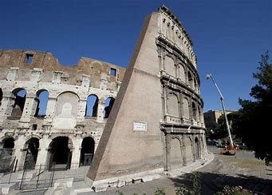

Colosseum, giant amphitheater built in Rome under the Flavian emperors. Construction of the Colosseum was begun sometime between 70 and 72 CE during the reign of Vespasian. It is located just east of the Palatine Hill, on the grounds of what was Nero’s Golden House. The artificial lake that was the centerpiece of that palace complex was drained, and the Colosseum was sited there, a decision that was as much symbolic as it was practical. Vespasian, whose path to the throne had relatively humble beginnings, chose to replace the tyrannical emperor’s private lake with a public amphitheater that could host tens of thousands of Romans.



Facts about Colosseum:
Construction and Origins:
The Colosseum, also known as the Flavian Amphitheatre, was built between 72 A.D. and 80 A.D. during the reign of Emperor Vespasian in the heart of Ancient Rome.
Constructed from stone and concrete, this magnificent monument required the labor of tens of thousands of slaves.
Size and Structure:
The Colosseum holds the title of the largest amphitheater in the world.
Its oval shape measures 189 meters long, 156 meters wide, and stands 50 meters high (approximately the height of a 12-story building). Imagine fitting a modern football pitch inside!
Audience and Events:
Approximately 50,000 spectators could fill the Colosseum’s seats during various events.
The arena hosted thrilling spectacles, including:
Free Admission and Popularity:
Major events, often funded by the emperors themselves, had no entry fee for attendees.
Free food was sometimes served, a clever way for emperors to gain popularity and support from the public.
Brutal Games:
While entertaining, the Colosseum’s events were brutal. On certain days, around 10,000 animals met their fate.
The first games, organized by Emperor Titus, ran for an impressive 100 days straight.
Innovations:
To shield spectators from the scorching Roman sun, a retractable awning called the velarium provided shade.
Below the Colosseum, numerous rooms and underground passages housed animals and gladiators awaiting their turn in the arena.
Legacy and Tourism:
Although two-thirds of the Colosseum has been lost over time due to vandalism, earthquakes, and fires, it remains a popular tourist site.
Thousands of visitors explore its historic grounds each year.